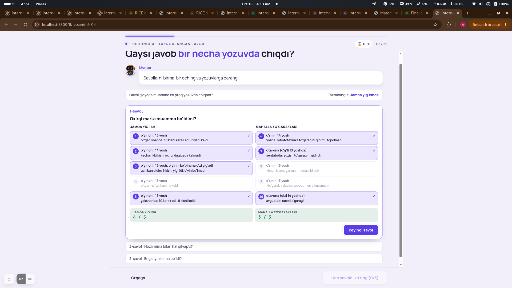
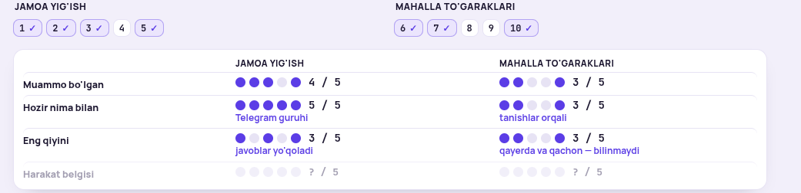
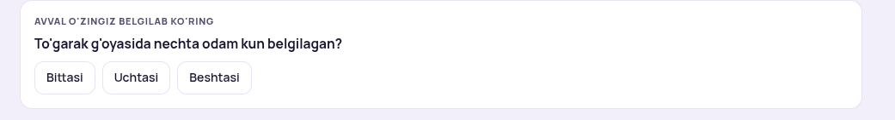
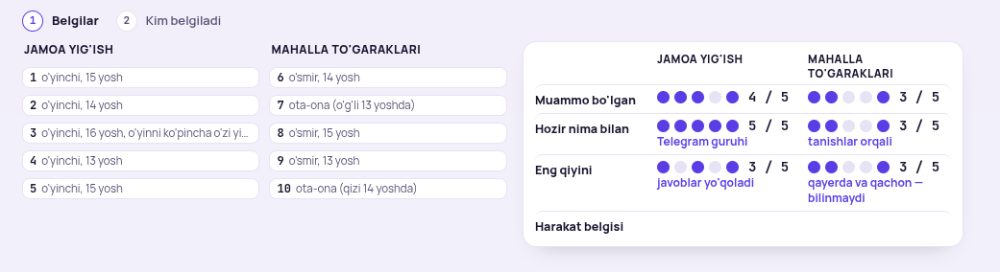
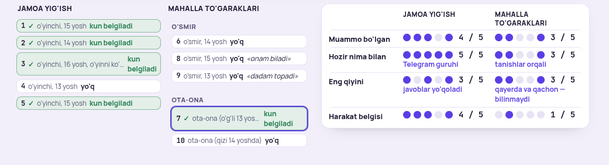
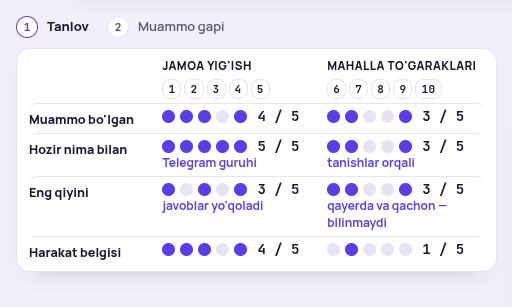
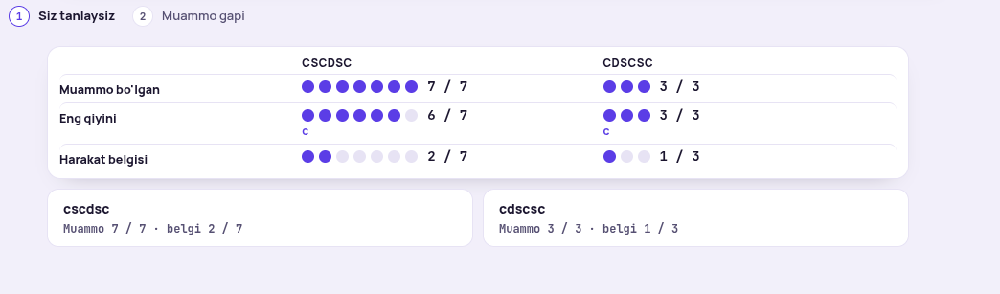
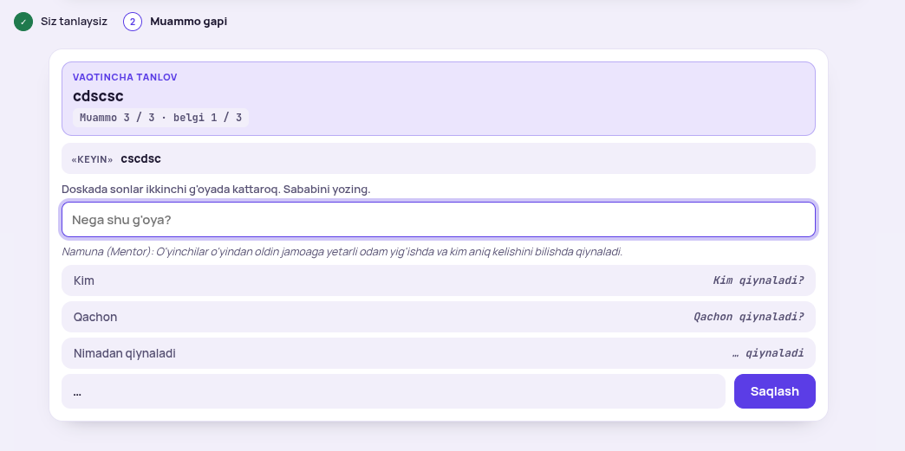

Eng kattasi — Mentor misoli 10 yozuvdan 6 taga. U sonlarni, testni, kod ekranini va 5-darsdagi ikki havolani o'zgartiradi — 1-bandda hammasi yozilgan. «Hammasi A» yoki raqam bilan.
«10 ta emas 6 ta qilaylik — UI toza va tushunarli bo'lardi»

Tashxis. Rozi: 13 yoshli o'quvchi o'nta kartani o'qimaydi, 3 + 3 ni o'qiydi. Qoladigan yozuvlar: jamoa — 1, 2, 3 (uchalasida muammo va kun belgilagan); to'garak — 6 (o'smir, muammo, yo'q), 7 (ota-ona, muammo, kun belgiladi), 8 (o'smir, «onam biladi», yo'q). Darsning uch kashfiyoti saqlanadi: muammo ikkalasida ham bor (farq bitta yozuv), harakat belgisi jamoada kuchli, to'garakda tanlovchi ota-ona.
| Qator | Jamoa yig'ish | Mahalla to'garaklari |
|---|---|---|
| Muammo bo'lgan | 3 / 3 | 2 / 3 |
| Hozir nima bilan | Telegram guruhi 3 / 3 | tanishlar orqali 2 / 3 |
| Eng qiyini | javoblar yo'qoladi 2 / 3 | qayerda va qachon — bilinmaydi 2 / 3 |
| Harakat belgisi | 3 / 3 | 1 / 3 |
Qayerga tegadi. 0-ekran «3 ta intervyu» · 2, 4-ekran sonlari · 3-test savoli («jamoada 3 yozuvda, to'garakda 2 tasida») · 4-ekran bashorati «Bittasi · Ikkitasi · Uchtasi» · 8-ekran dalili «Muammo 3 / 3 · belgi 3 / 3» · 11-ekran kodi (6 yozuv, natija) · kartochka «6 yozuv» · arena va eslatmalardagi «10 intervyu» → «olti intervyu». Dars nomi qoladi: o'quvchining o'zi 5 + 5 yig'adi, Mentor misoli qisqa. 5-darsda ikki havola («2-yozuv», «5-yozuv») — 5-dars qayta loyihasida tuzatiladi (5 → 2).
«shuni bitta cardga olsak … cardda o'ralsa akuratne yaxshi ko'rinadi»

Tashxis. Chiplar doskaning ustun nomlari ostida turishi kerak (8-ekrandagidek). Olti yozuv bilan bu bitta qator.
«birinchi shu ko'rinsin, pastdagi ko'rinmay tursin; tanlagach pastdagi animatsiyada kelsin, u esa kichraysin»

Tashxis. 2-ekranda shunday qilingan (213.7), 4-ekranda qolib ketgan. Bashoratgacha pastda hech narsa yo'q; tanlangach bashorat bitta qatorga yig'iladi («Taxminingiz: bittasi»), karta pastdan kirib keladi.
«bitta cardga olsak, yozadiganlarga birozdan border qo'ysak … 6 ta bo'ladi»

«tushunarsiz»

Tashxis. Savol «kim kun belgiladi?» — javob bitta jadval: kim · nechtasi. Chiplarni surish o'rniga karta ichida ikki qator chiqadi, chiplar joyida qoladi.
«juda element ko'p, qaragim ham o'qigim ham kelmadi»

Tashxis. Doska 2 va 4-ekranda ko'rilgan. Tanlov uchun ikkita son yetadi: muammo va harakat belgisi. 10-ekranda o'quvchi o'z g'oyasini xuddi shunday kartalardan tanlaydi — Mentor misoli shunga o'xshasa, o'quvchi 10-ekranda adashmaydi.
«shuni bitta card qilamizmi yo shart emasmi»

Tashxis. Shart: sonlar ikki joyda takror. Doska olinadi, ikki g'oya kartasi uch son bilan (muammo, eng qiyini, belgi) bitta kartada; 8-ekrandagi Mentor kartalari bilan bir xil ko'rinish.
«biroz tushunarsizmi — ko'r o'zing»

Tashxis. Kulrang qatorlarning o'ng tomonidagi kursiv matn («Kim qiynaladi?») javobga o'xshaydi; «…» qatori bo'sh; «Nega shu g'oya?» izoh + qator ikki narsa; «Muammo gapi» degan sarlavha yo'q — o'quvchi nima qilayotganini bilmaydi.